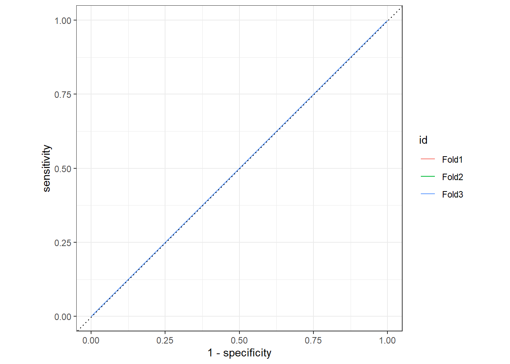
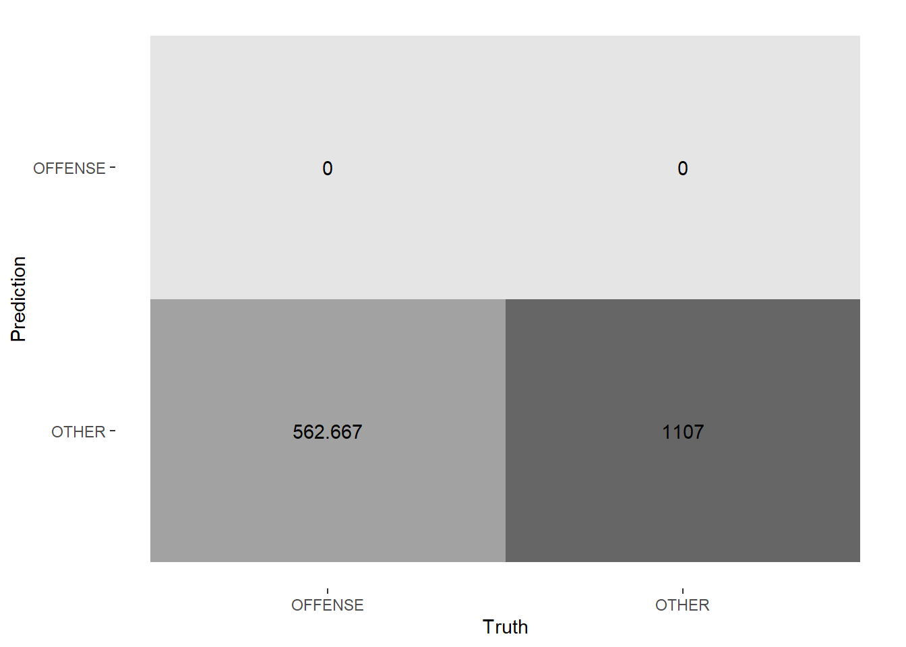
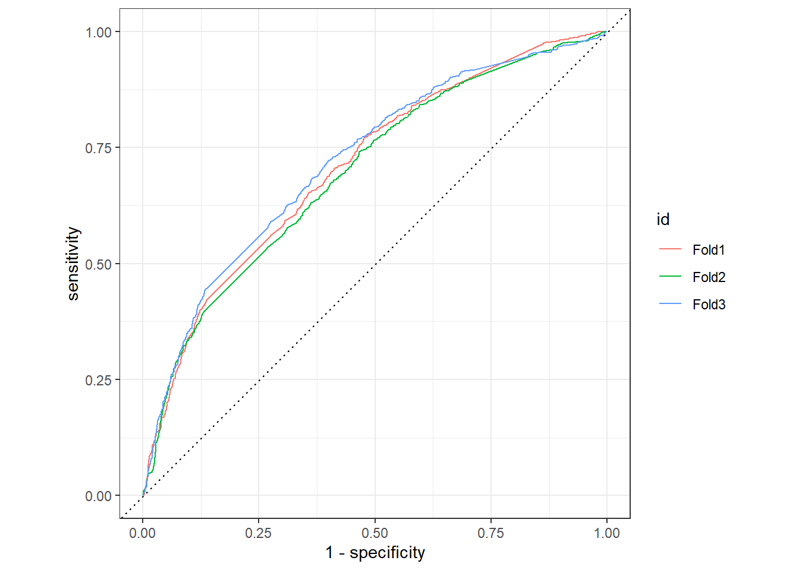
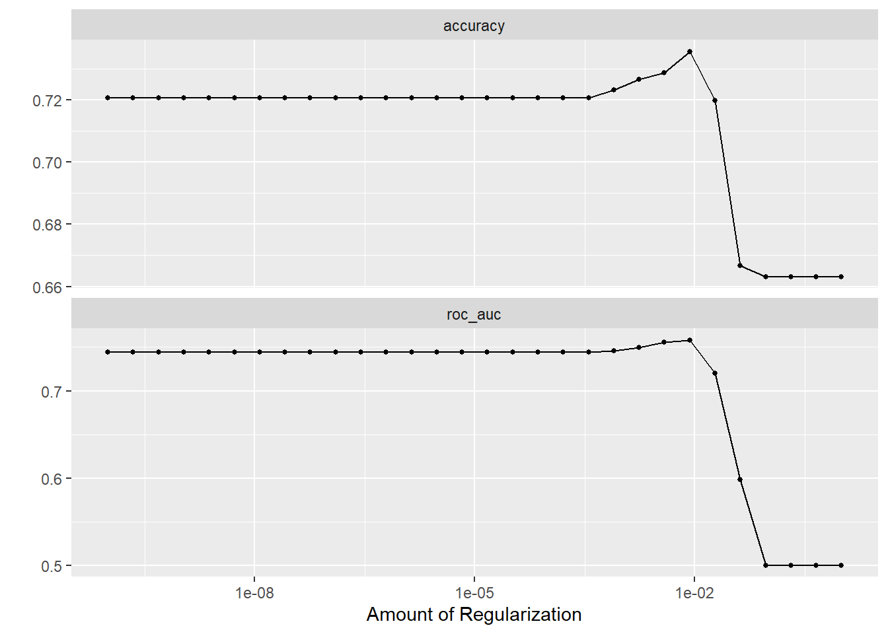
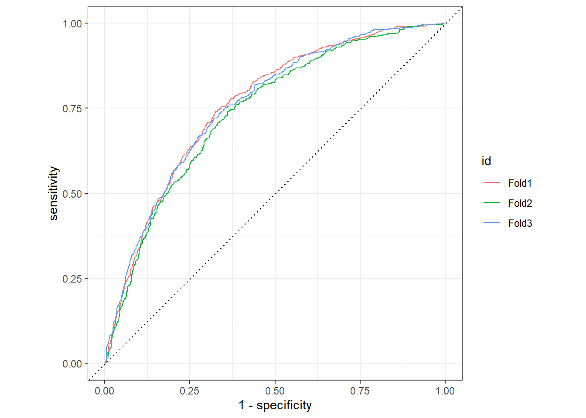
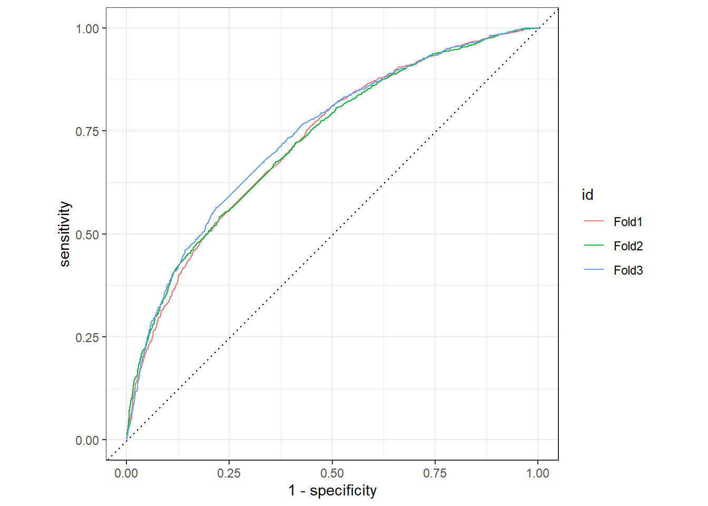
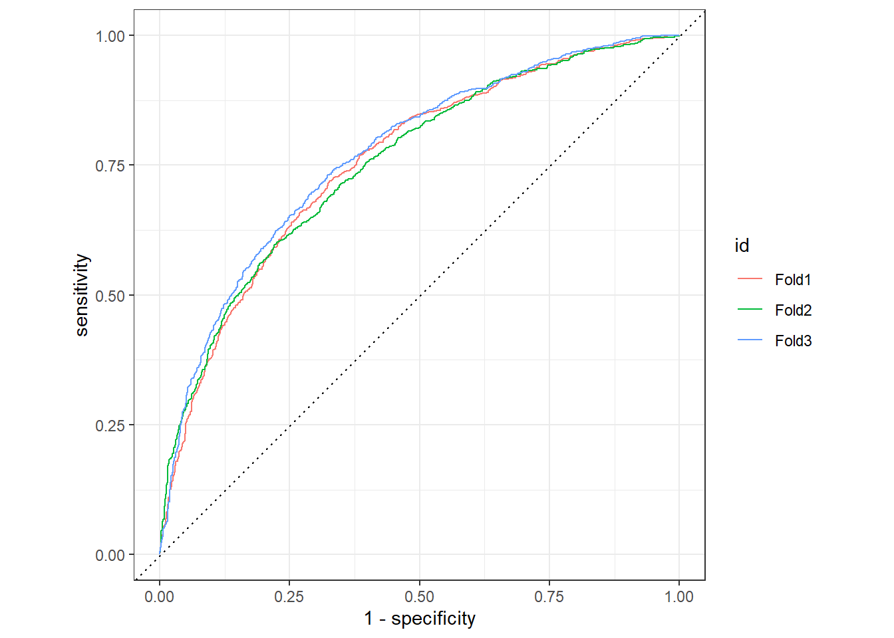
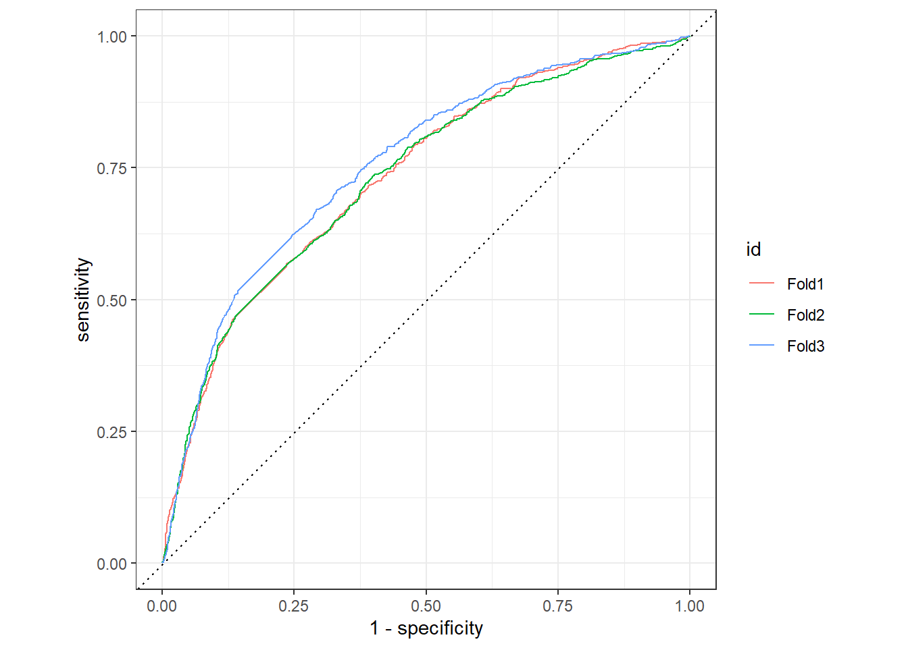
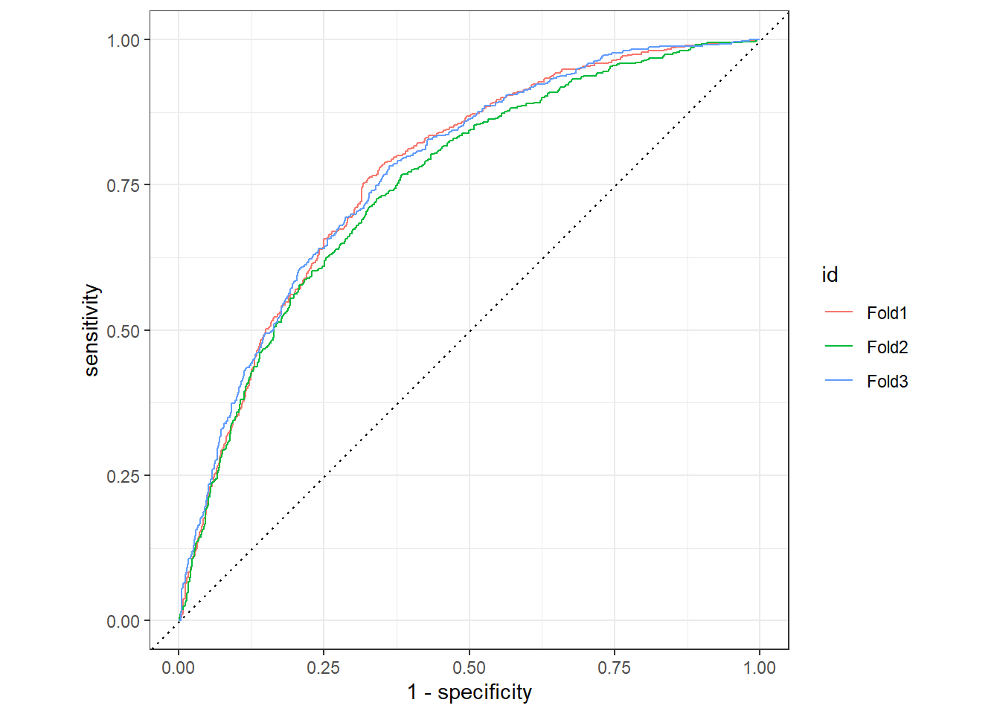

library(tidyverse)
library(rio)
library(tidymodels)
library(tidytext)
library(textrecipes)
library(lsa)
library(discrim)
library(naivebayes)
library(tictoc)
library(fastrtext)
library(remoji)
library(tokenizers)1. Preliminary Note
For this analysis we use the dataset from Wiegand (2019a) out of the zip archive Wiegand (2019b). The data are licensed according to Attribution 4.0 International (CC-BY-4.0). The used wordembeddings are from Grave et al. (2018). The data are licensed according to Attribution-ShareAlike 3.0 Unported (CC-BY-SA 3.0). The picture, that is used is from Altmann (n.d.).
2. Load The Packages
3. Load Dataset And Minor Changes
3.1 Train Dataset
d_train <- read_tsv("C:/Users/sapi-/OneDrive/Studium/5. Semester/Data Science II/Data_Science_Blog/daten/germeval2018.training.txt", col_names = FALSE)Rename Columns
names(d_train) <- c("text", "c1", "c2")Add ID Column
d_train <- d_train %>%
mutate(id = row_number()) %>%
select(id, everything())3.2 Test Dataset
d_test <- read_tsv("C:/Users/sapi-/OneDrive/Studium/5. Semester/Data Science II/Data_Science_Blog/daten/germeval2018.test.txt", col_names = FALSE)Rename Columns
names(d_test) <- c("text", "c1", "c2")Add ID Column
d_test <- d_test %>%
mutate(id = row_number()) %>%
select(id, everything())4. Explore Dataset
train_toc <- d_train %>%
unnest_tokens(output = token, input = text)
train_toc# A tibble: 100,217 x 4
id c1 c2 token
<int> <chr> <chr> <chr>
1 1 OTHER OTHER corinnamilborn
2 1 OTHER OTHER liebe
3 1 OTHER OTHER corinna
4 1 OTHER OTHER wir
5 1 OTHER OTHER würden
6 1 OTHER OTHER dich
7 1 OTHER OTHER gerne
8 1 OTHER OTHER als
9 1 OTHER OTHER moderatorin
10 1 OTHER OTHER für
# ... with 100,207 more rowsFirst we tokenize the dataset d_train. ## Insert
Stopwords_de
data(stopwords_de, package = "lsa")
stopwords_de <- tibble(word = stopwords_de)
stopwords_de <- stopwords_de %>%
rename(token = word)After that we use the stopwords_de to
anti_jointhis with train_toc.
train_toc2 <- train_toc %>%
anti_join(stopwords_de)Joining, by = "token"Show The Important Words
train_toc2 <- train_toc2 %>%
count(token, sort = TRUE)Plot
train_toc2 %>%
slice_head(n=20) %>%
ggplot()+
aes(y=reorder(factor(token), n), x = n, color = token)+
geom_col(aes(fill = token, alpha = 2.5)) +
ggtitle("The most used words") +
ylab("token")+
xlab("quantity")+
theme_minimal()+
theme(legend.position = "none")We see that, to most used word is “lbr”. We could inspect the dataset way deeper, e. g. do a manual sentimentanalysis or do a lemmatization or stem the words. But we will have a look to these types in the different machine learning algorithm now.
5. Preparation
5.1 Define Recipe - rec1 - TF-IDF
rec1 <-
recipe(c1 ~ ., data = select(d_train, text, c1, id)) %>%
update_role(id, new_role = "id") %>%
step_tokenize(text) %>%
step_stopwords(text, language = "de", stopword_source = "snowball") %>%
step_stem(text) %>%
step_tfidf(text) %>%
step_normalize(all_numeric_predictors())
rec1Recipe
Inputs:
role #variables
id 1
outcome 1
predictor 1
Operations:
Tokenization for text
Stop word removal for text
Stemming for text
Term frequency-inverse document frequency with text
Centering and scaling for all_numeric_predictors()Prep & Bake - rec1
rec1_prep <- rec1 %>%
prep() %>%
recipes::bake(new_data = NULL)5.2 Define Recipe - rec2 - word embedding
After fitting all the models I have decided to not fit the easy word embedding recipe (rec2)! The reason for this decision is, because of the analysis run-time! We have a large amount of data and extensive recipes, so when I raise the resamples for the prediction, R Studio quits the session.
training: v = 1, folds = 2
prediction: v = 2, folds = 5
#rec2 <-
#recipe(c1 ~ ., data = select(d_train, text, c1, id)) %>%
#update_role(id, new_role = "id") %>%
#step_tokenize(text) %>%
#step_stopwords(text, language = "de", stopword_source = "snowball") %>%
#step_word_embeddings(text, embeddings = word_embedding_text)Insert The Predefined List
out_file_model <- "C:/Users/sapi-/OneDrive - Hochschule für Angewandte Wissenschaften Ansbach/Desktop/AWM/angewandte Wirtschats- und Medienpsychologie/5. Semester/Word_Embedding/de.300.bin"file.exists(out_file_model)[1] TRUEfasttext_model <- load_model(out_file_model)
dictionary <- get_dictionary(fasttext_model)
get_word_vectors(fasttext_model, c("menschen")) %>% `[`(1:10) [1] -0.043737594 -0.033647023 -0.016398411 0.037433818 0.029863771
[6] -0.008217440 0.002691153 -0.027484305 -0.058012061 0.004103063print(head(dictionary, 10)) [1] "," "." "</s>" "und" "der" ":" "die" "\"" ")" "(" word_embedding_text <- tibble(word = dictionary)options(mc.cores = parallel::detectCores())
words_vecs <- get_word_vectors(fasttext_model)word_embedding_text <-
word_embedding_text %>%
bind_cols(words_vecs)names(word_embedding_text) <- c("word", paste0("v", sprintf("%03d", 1:301)))Warning: The `value` argument of `names<-` must have the same length as `x` as of tibble
3.0.0.
i `names` must have length 301, not 302.5.3 Define Recipe - rec3 - Word Embeddings
Insert the Helperfunctions
We are using the package [pradadata] (https://github.com/sebastiansauer/pradadata) from Sauer (2018). The data are licensed according to General Public License 3 (GLP-3).
data("schimpwoerter", package = "pradadata")
data("sentiws", package = "pradadata")
data("wild_emojis", package = "pradadata")
source("C:/Users/sapi-/OneDrive/Studium/5. Semester/Data Science II/Data_Science_Blog/helper/helper_funs.R")rec3
rec3 <-
recipe(c1 ~., data = select(d_train, text, c1, id)) %>%
update_role(id, new_role = "id") %>%
step_text_normalization(text) %>%
step_mutate(emo_count = map_int(text, ~count_lexicon(.x, sentiws$word))) %>%
step_mutate(schimpf_count = map_int(text, ~count_lexicon(.x, schimpfwoerter$word))) %>%
step_mutate(wild_emojis = map_int(text, ~count_lexicon(.x, wild_emojis$emoji))) %>%
step_mutate(text_copy = text) %>%
step_textfeature(text_copy) %>%
step_tokenize(text) %>%
step_stopwords(text, language = "de", stopword_source = "snowball") %>%
step_stem(text) %>%
step_word_embeddings(text, embeddings = word_embedding_text)rec3_prep <- rec3 %>%
prep() %>%
recipes::bake(new_data = NULL)5.4 Define Recipe - rec4 - TF-IDF
rec4
rec4 <-
recipe(c1 ~., data = select(d_train, text, c1, id)) %>%
update_role(id, new_role = "id") %>%
step_text_normalization(text) %>%
step_mutate(emo_count = map_int(text, ~count_lexicon(.x, sentiws$word))) %>%
step_mutate(schimpf_count = map_int(text, ~count_lexicon(.x, schimpfwoerter$word))) %>%
step_mutate(wild_emojis = map_int(text, ~count_lexicon(.x, wild_emojis$emoji))) %>%
step_mutate(text_copy = text) %>%
step_textfeature(text_copy) %>%
step_tokenize(text) %>%
step_stopwords(text, language = "de", stopword_source = "snowball") %>%
step_stem(text) %>%
step_tfidf(text)rec4_prep <- rec4 %>%
prep() %>%
recipes::bake(new_data = NULL)6. Build Resamples
I have decided to go with the V-Fold-Cross-Validation, because of the time. We have a large amount of data with extremely extensive recipes, so the run-time would be enormous, if we would try another option of resampling, e. g. bootstrapping.
folds <- vfold_cv(data = d_train,
v = 3,
repeats = 1,
strata = c1)7. Build the Penalty-Grid
lambda_grid <- grid_regular(penalty(), levels = 30)8. Build the Models
8.1 Null Model
tic()mod0 <- null_model() %>%
set_engine("parsnip") %>%
set_mode("classification")Define The Workflow
wf0 <- workflow() %>%
add_recipe(rec1) %>%
add_model(mod0)Resampling & Model Quality
options(mc.cores = parallel::detectCores())
tic()
fit0 <- fit_resamples(
wf0,
folds,
control =control_resamples(save_pred = TRUE)
)Warning: Paket 'stopwords' wurde unter R Version 4.1.3 erstellttoc()183.46 sec elapsedperformance0 <- collect_metrics(fit0)
performance0# A tibble: 2 x 6
.metric .estimator mean n std_err .config
<chr> <chr> <dbl> <int> <dbl> <chr>
1 accuracy binary 0.663 3 0.000132 Preprocessor1_Model1
2 roc_auc binary 0.5 3 0 Preprocessor1_Model1preds0 <- collect_predictions(fit0)
preds0 %>%
group_by(id) %>%
roc_curve(truth = c1, .pred_OFFENSE) %>%
autoplot()
conf_mat_resampled(fit0, tidy = FALSE) %>%
autoplot(type = "heatmap")
8.2 Lasso-L1 With TF-IDF
L1-Model
l1_82_mod <- logistic_reg(penalty = tune(), mixture = 1) %>%
set_engine("glmnet") %>%
set_mode("classification")
l1_82_modLogistic Regression Model Specification (classification)
Main Arguments:
penalty = tune()
mixture = 1
Computational engine: glmnet Define The Workflow
l1_82_wf <-workflow() %>%
add_recipe(rec1) %>%
add_model(l1_82_mod)
l1_82_wf== Workflow ====================================================================
Preprocessor: Recipe
Model: logistic_reg()
-- Preprocessor ----------------------------------------------------------------
5 Recipe Steps
* step_tokenize()
* step_stopwords()
* step_stem()
* step_tfidf()
* step_normalize()
-- Model -----------------------------------------------------------------------
Logistic Regression Model Specification (classification)
Main Arguments:
penalty = tune()
mixture = 1
Computational engine: glmnet Resampling & Model Quality
options(mc.cores = parallel::detectCores())
l1_82_wf_fit <- tune_grid(
l1_82_wf,
folds,
grid = lambda_grid,
control = control_resamples(save_pred = TRUE)
)Warning: Paket 'glmnet' wurde unter R Version 4.1.3 erstelltWarning: Paket 'Matrix' wurde unter R Version 4.1.3 erstelltModel Performance
l1_82_wf_fit_performance <- collect_metrics(l1_82_wf_fit)
l1_82_wf_fit_performance# A tibble: 60 x 7
penalty .metric .estimator mean n std_err .config
<dbl> <chr> <chr> <dbl> <int> <dbl> <chr>
1 1 e-10 accuracy binary 0.721 3 0.00368 Preprocessor1_Model01
2 1 e-10 roc_auc binary 0.745 3 0.00667 Preprocessor1_Model01
3 2.21e-10 accuracy binary 0.721 3 0.00368 Preprocessor1_Model02
4 2.21e-10 roc_auc binary 0.745 3 0.00667 Preprocessor1_Model02
5 4.89e-10 accuracy binary 0.721 3 0.00368 Preprocessor1_Model03
6 4.89e-10 roc_auc binary 0.745 3 0.00667 Preprocessor1_Model03
7 1.08e- 9 accuracy binary 0.721 3 0.00368 Preprocessor1_Model04
8 1.08e- 9 roc_auc binary 0.745 3 0.00667 Preprocessor1_Model04
9 2.40e- 9 accuracy binary 0.721 3 0.00368 Preprocessor1_Model05
10 2.40e- 9 roc_auc binary 0.745 3 0.00667 Preprocessor1_Model05
# ... with 50 more rowsl1_82_wf_fit_preds <- collect_predictions(l1_82_wf_fit)l1_82_wf_fit_preds %>%
group_by(id) %>%
roc_curve(truth = c1, .pred_OFFENSE) %>%
autoplot()
autoplot(l1_82_wf_fit)
Select The Best
chosen_auc_l1_82_wf_fit <-
l1_82_wf_fit %>%
select_by_one_std_err(metric = "roc_auc", -penalty)
chosen_auc_l1_82_wf_fit# A tibble: 1 x 9
penalty .metric .estimator mean n std_err .config .best .bound
<dbl> <chr> <chr> <dbl> <int> <dbl> <chr> <dbl> <dbl>
1 0.00853 roc_auc binary 0.758 3 0.00567 Preprocessor1_Mod~ 0.758 0.7538.3 Ridge-Regression-L2 With TF-IDF
L2-Model
l2_83_mod <- logistic_reg(penalty = tune(), mixture = 0) %>%
set_engine("glmnet") %>%
set_mode("classification")
l2_83_modLogistic Regression Model Specification (classification)
Main Arguments:
penalty = tune()
mixture = 0
Computational engine: glmnet Define The Workflow
l2_83_wf <-workflow() %>%
add_recipe(rec1) %>%
add_model(l2_83_mod)
l2_83_wf== Workflow ====================================================================
Preprocessor: Recipe
Model: logistic_reg()
-- Preprocessor ----------------------------------------------------------------
5 Recipe Steps
* step_tokenize()
* step_stopwords()
* step_stem()
* step_tfidf()
* step_normalize()
-- Model -----------------------------------------------------------------------
Logistic Regression Model Specification (classification)
Main Arguments:
penalty = tune()
mixture = 0
Computational engine: glmnet Resampling & Model Quality
options(mc.cores = parallel::detectCores())
l2_83_wf_fit <- tune_grid(
l2_83_wf,
folds,
grid = lambda_grid,
control = control_resamples(save_pred = TRUE)
)collect_metrics(l2_83_wf_fit)# A tibble: 60 x 7
penalty .metric .estimator mean n std_err .config
<dbl> <chr> <chr> <dbl> <int> <dbl> <chr>
1 1 e-10 accuracy binary 0.709 3 0.00430 Preprocessor1_Model01
2 1 e-10 roc_auc binary 0.753 3 0.00666 Preprocessor1_Model01
3 2.21e-10 accuracy binary 0.709 3 0.00430 Preprocessor1_Model02
4 2.21e-10 roc_auc binary 0.753 3 0.00666 Preprocessor1_Model02
5 4.89e-10 accuracy binary 0.709 3 0.00430 Preprocessor1_Model03
6 4.89e-10 roc_auc binary 0.753 3 0.00666 Preprocessor1_Model03
7 1.08e- 9 accuracy binary 0.709 3 0.00430 Preprocessor1_Model04
8 1.08e- 9 roc_auc binary 0.753 3 0.00666 Preprocessor1_Model04
9 2.40e- 9 accuracy binary 0.709 3 0.00430 Preprocessor1_Model05
10 2.40e- 9 roc_auc binary 0.753 3 0.00666 Preprocessor1_Model05
# ... with 50 more rowsModel Performance
l2_83_wf_fit_performance <- collect_metrics(l2_83_wf_fit)
l2_83_wf_fit_performance# A tibble: 60 x 7
penalty .metric .estimator mean n std_err .config
<dbl> <chr> <chr> <dbl> <int> <dbl> <chr>
1 1 e-10 accuracy binary 0.709 3 0.00430 Preprocessor1_Model01
2 1 e-10 roc_auc binary 0.753 3 0.00666 Preprocessor1_Model01
3 2.21e-10 accuracy binary 0.709 3 0.00430 Preprocessor1_Model02
4 2.21e-10 roc_auc binary 0.753 3 0.00666 Preprocessor1_Model02
5 4.89e-10 accuracy binary 0.709 3 0.00430 Preprocessor1_Model03
6 4.89e-10 roc_auc binary 0.753 3 0.00666 Preprocessor1_Model03
7 1.08e- 9 accuracy binary 0.709 3 0.00430 Preprocessor1_Model04
8 1.08e- 9 roc_auc binary 0.753 3 0.00666 Preprocessor1_Model04
9 2.40e- 9 accuracy binary 0.709 3 0.00430 Preprocessor1_Model05
10 2.40e- 9 roc_auc binary 0.753 3 0.00666 Preprocessor1_Model05
# ... with 50 more rowsl2_83_wf_fit_preds <- collect_predictions(l2_83_wf_fit)l2_83_wf_fit_preds %>%
group_by(id) %>%
roc_curve(truth = c1, .pred_OFFENSE) %>%
autoplot()
Select The Best
chosen_auc_l2_83_wf_fit <-
l2_83_wf_fit %>%
select_by_one_std_err(metric = "roc_auc", -penalty)
chosen_auc_l2_83_wf_fit# A tibble: 1 x 9
penalty .metric .estimator mean n std_err .config .best .bound
<dbl> <chr> <chr> <dbl> <int> <dbl> <chr> <dbl> <dbl>
1 1 roc_auc binary 0.754 3 0.00643 Preprocessor1_Mod~ 0.754 0.7478.4 Lasso-L1 With Word Embeddings
L1-Model
l1_84_mod <- logistic_reg(penalty = tune(), mixture = 1) %>%
set_engine("glmnet") %>%
set_mode("classification")
l1_84_modLogistic Regression Model Specification (classification)
Main Arguments:
penalty = tune()
mixture = 1
Computational engine: glmnet Define The Workflow
l1_84_wf <- workflow() %>%
add_recipe(rec3) %>%
add_model(l1_84_mod)
l1_84_wf== Workflow ====================================================================
Preprocessor: Recipe
Model: logistic_reg()
-- Preprocessor ----------------------------------------------------------------
10 Recipe Steps
* step_text_normalization()
* step_mutate()
* step_mutate()
* step_mutate()
* step_mutate()
* step_textfeature()
* step_tokenize()
* step_stopwords()
* step_stem()
* step_word_embeddings()
-- Model -----------------------------------------------------------------------
Logistic Regression Model Specification (classification)
Main Arguments:
penalty = tune()
mixture = 1
Computational engine: glmnet Resampling & Model Quality
options(mc.cores = parallel::detectCores())
l1_84_wf_fit <- tune_grid(
l1_84_wf,
folds,
grid = lambda_grid,
control = control_resamples(save_pred = TRUE)
)Warning: Paket 'stringi' wurde unter R Version 4.1.2 erstelltWarning: Paket 'textfeatures' wurde unter R Version 4.1.3 erstelltcollect_metrics(l1_84_wf_fit)# A tibble: 60 x 7
penalty .metric .estimator mean n std_err .config
<dbl> <chr> <chr> <dbl> <int> <dbl> <chr>
1 1 e-10 accuracy binary 0.728 3 0.00597 Preprocessor1_Model01
2 1 e-10 roc_auc binary 0.752 3 0.00283 Preprocessor1_Model01
3 2.21e-10 accuracy binary 0.728 3 0.00597 Preprocessor1_Model02
4 2.21e-10 roc_auc binary 0.752 3 0.00283 Preprocessor1_Model02
5 4.89e-10 accuracy binary 0.728 3 0.00597 Preprocessor1_Model03
6 4.89e-10 roc_auc binary 0.752 3 0.00283 Preprocessor1_Model03
7 1.08e- 9 accuracy binary 0.728 3 0.00597 Preprocessor1_Model04
8 1.08e- 9 roc_auc binary 0.752 3 0.00283 Preprocessor1_Model04
9 2.40e- 9 accuracy binary 0.728 3 0.00597 Preprocessor1_Model05
10 2.40e- 9 roc_auc binary 0.752 3 0.00283 Preprocessor1_Model05
# ... with 50 more rowsModel Performance
l1_84_wf_fit_performance <- collect_metrics(l1_84_wf_fit)
l1_84_wf_fit_performance# A tibble: 60 x 7
penalty .metric .estimator mean n std_err .config
<dbl> <chr> <chr> <dbl> <int> <dbl> <chr>
1 1 e-10 accuracy binary 0.728 3 0.00597 Preprocessor1_Model01
2 1 e-10 roc_auc binary 0.752 3 0.00283 Preprocessor1_Model01
3 2.21e-10 accuracy binary 0.728 3 0.00597 Preprocessor1_Model02
4 2.21e-10 roc_auc binary 0.752 3 0.00283 Preprocessor1_Model02
5 4.89e-10 accuracy binary 0.728 3 0.00597 Preprocessor1_Model03
6 4.89e-10 roc_auc binary 0.752 3 0.00283 Preprocessor1_Model03
7 1.08e- 9 accuracy binary 0.728 3 0.00597 Preprocessor1_Model04
8 1.08e- 9 roc_auc binary 0.752 3 0.00283 Preprocessor1_Model04
9 2.40e- 9 accuracy binary 0.728 3 0.00597 Preprocessor1_Model05
10 2.40e- 9 roc_auc binary 0.752 3 0.00283 Preprocessor1_Model05
# ... with 50 more rowsl1_84_wf_fit_preds <- collect_predictions(l1_84_wf_fit)l1_84_wf_fit_preds %>%
group_by(id) %>%
roc_curve(truth = c1, .pred_OFFENSE) %>%
autoplot()
Select The Best
chosen_auc_l1_84_wf_fit <-
l1_84_wf_fit %>%
select_by_one_std_err(metric = "roc_auc", -penalty)
chosen_auc_l1_84_wf_fit# A tibble: 1 x 9
penalty .metric .estimator mean n std_err .config .best .bound
<dbl> <chr> <chr> <dbl> <int> <dbl> <chr> <dbl> <dbl>
1 0.00386 roc_auc binary 0.768 3 0.00581 Preprocessor1_Mod~ 0.768 0.7628.5 Ridge-Regression-L2 with TF-IDF
L2-Model
l2_85_mod <- logistic_reg(penalty = tune(), mixture = 0) %>%
set_engine("glmnet") %>%
set_mode("classification")
l2_85_modLogistic Regression Model Specification (classification)
Main Arguments:
penalty = tune()
mixture = 0
Computational engine: glmnet Define The Workflow
l2_85_wf <-workflow() %>%
add_recipe(rec3) %>%
add_model(l2_85_mod)
l2_85_wf== Workflow ====================================================================
Preprocessor: Recipe
Model: logistic_reg()
-- Preprocessor ----------------------------------------------------------------
10 Recipe Steps
* step_text_normalization()
* step_mutate()
* step_mutate()
* step_mutate()
* step_mutate()
* step_textfeature()
* step_tokenize()
* step_stopwords()
* step_stem()
* step_word_embeddings()
-- Model -----------------------------------------------------------------------
Logistic Regression Model Specification (classification)
Main Arguments:
penalty = tune()
mixture = 0
Computational engine: glmnet Resampling & Model Quality
options(mc.cores = parallel::detectCores())
l2_85_wf_fit <- tune_grid(
l2_85_wf,
folds,
grid = lambda_grid,
control = control_resamples(save_pred = TRUE)
)Model Performance
l2_85_wf_performance <- collect_metrics(l2_85_wf_fit)
l2_85_wf_performance# A tibble: 60 x 7
penalty .metric .estimator mean n std_err .config
<dbl> <chr> <chr> <dbl> <int> <dbl> <chr>
1 1 e-10 accuracy binary 0.738 3 0.00463 Preprocessor1_Model01
2 1 e-10 roc_auc binary 0.764 3 0.00495 Preprocessor1_Model01
3 2.21e-10 accuracy binary 0.738 3 0.00463 Preprocessor1_Model02
4 2.21e-10 roc_auc binary 0.764 3 0.00495 Preprocessor1_Model02
5 4.89e-10 accuracy binary 0.738 3 0.00463 Preprocessor1_Model03
6 4.89e-10 roc_auc binary 0.764 3 0.00495 Preprocessor1_Model03
7 1.08e- 9 accuracy binary 0.738 3 0.00463 Preprocessor1_Model04
8 1.08e- 9 roc_auc binary 0.764 3 0.00495 Preprocessor1_Model04
9 2.40e- 9 accuracy binary 0.738 3 0.00463 Preprocessor1_Model05
10 2.40e- 9 roc_auc binary 0.764 3 0.00495 Preprocessor1_Model05
# ... with 50 more rowsl2_85_wf_fit_preds <- collect_predictions(l2_85_wf_fit)l2_85_wf_fit_preds %>%
group_by(id) %>%
roc_curve(truth = c1, .pred_OFFENSE) %>%
autoplot()
Show The Best
show_best(l2_85_wf_fit)Warning: No value of `metric` was given; metric 'roc_auc' will be used.# A tibble: 5 x 7
penalty .metric .estimator mean n std_err .config
<dbl> <chr> <chr> <dbl> <int> <dbl> <chr>
1 0.0924 roc_auc binary 0.769 3 0.00616 Preprocessor1_Model27
2 0.0418 roc_auc binary 0.769 3 0.00609 Preprocessor1_Model26
3 0.204 roc_auc binary 0.767 3 0.00633 Preprocessor1_Model28
4 0.0189 roc_auc binary 0.767 3 0.00543 Preprocessor1_Model25
5 0.0000000001 roc_auc binary 0.764 3 0.00495 Preprocessor1_Model01Select The Best
chosen_auc_l2_85_wf_fit <-
l2_85_wf_fit %>%
select_by_one_std_err(metric = "roc_auc", -penalty)
chosen_auc_l2_85_wf_fit# A tibble: 1 x 9
penalty .metric .estimator mean n std_err .config .best .bound
<dbl> <chr> <chr> <dbl> <int> <dbl> <chr> <dbl> <dbl>
1 0.204 roc_auc binary 0.767 3 0.00633 Preprocessor1_Mod~ 0.769 0.7638.6 Lasso-L1 With TF-IDF
L1-Model
l1_86_mod <- logistic_reg(penalty = tune(), mixture = 1) %>%
set_engine("glmnet") %>%
set_mode("classification")
l1_86_modLogistic Regression Model Specification (classification)
Main Arguments:
penalty = tune()
mixture = 1
Computational engine: glmnet Define The Workflow
l1_86_wf <-workflow() %>%
add_recipe(rec4) %>%
add_model(l1_86_mod)
l1_86_wf== Workflow ====================================================================
Preprocessor: Recipe
Model: logistic_reg()
-- Preprocessor ----------------------------------------------------------------
10 Recipe Steps
* step_text_normalization()
* step_mutate()
* step_mutate()
* step_mutate()
* step_mutate()
* step_textfeature()
* step_tokenize()
* step_stopwords()
* step_stem()
* step_tfidf()
-- Model -----------------------------------------------------------------------
Logistic Regression Model Specification (classification)
Main Arguments:
penalty = tune()
mixture = 1
Computational engine: glmnet Resampling & Model Quality
options(mc.cores = parallel::detectCores())
l1_86_wf_fit <- tune_grid(
l1_86_wf,
folds,
grid = lambda_grid,
control = control_resamples(save_pred = TRUE)
)Model Performance
l1_86_wf_performance <- collect_metrics(l1_86_wf_fit)
l1_86_wf_performance# A tibble: 60 x 7
penalty .metric .estimator mean n std_err .config
<dbl> <chr> <chr> <dbl> <int> <dbl> <chr>
1 1 e-10 accuracy binary 0.743 3 0.00515 Preprocessor1_Model01
2 1 e-10 roc_auc binary 0.771 3 0.00695 Preprocessor1_Model01
3 2.21e-10 accuracy binary 0.743 3 0.00515 Preprocessor1_Model02
4 2.21e-10 roc_auc binary 0.771 3 0.00695 Preprocessor1_Model02
5 4.89e-10 accuracy binary 0.743 3 0.00515 Preprocessor1_Model03
6 4.89e-10 roc_auc binary 0.771 3 0.00695 Preprocessor1_Model03
7 1.08e- 9 accuracy binary 0.743 3 0.00515 Preprocessor1_Model04
8 1.08e- 9 roc_auc binary 0.771 3 0.00695 Preprocessor1_Model04
9 2.40e- 9 accuracy binary 0.743 3 0.00515 Preprocessor1_Model05
10 2.40e- 9 roc_auc binary 0.771 3 0.00695 Preprocessor1_Model05
# ... with 50 more rowsl1_86_wf_fit_preds <- collect_predictions(l1_86_wf_fit)l1_86_wf_fit_preds %>%
group_by(id) %>%
roc_curve(truth = c1, .pred_OFFENSE) %>%
autoplot()
Show The Best
select_best(l1_86_wf_fit)Warning: No value of `metric` was given; metric 'roc_auc' will be used.# A tibble: 1 x 2
penalty .config
<dbl> <chr>
1 0.00853 Preprocessor1_Model24Select The Best
chosen_auc_l1_86_wf_fit <-
l1_86_wf_fit %>%
select_by_one_std_err(metric = "roc_auc", -penalty)
chosen_auc_l1_86_wf_fit# A tibble: 1 x 9
penalty .metric .estimator mean n std_err .config .best .bound
<dbl> <chr> <chr> <dbl> <int> <dbl> <chr> <dbl> <dbl>
1 0.00853 roc_auc binary 0.781 3 0.00762 Preprocessor1_Mod~ 0.781 0.7738.7 Ridge-Regression-L2 With TF-IDF
L2-Model
l2_87_mod <- logistic_reg(penalty = tune(), mixture = 0) %>%
set_engine("glmnet") %>%
set_mode("classification")
l2_87_modLogistic Regression Model Specification (classification)
Main Arguments:
penalty = tune()
mixture = 0
Computational engine: glmnet Define The Workflow
l2_87_wf <-workflow() %>%
add_recipe(rec4) %>%
add_model(l2_87_mod)
l2_87_wf== Workflow ====================================================================
Preprocessor: Recipe
Model: logistic_reg()
-- Preprocessor ----------------------------------------------------------------
10 Recipe Steps
* step_text_normalization()
* step_mutate()
* step_mutate()
* step_mutate()
* step_mutate()
* step_textfeature()
* step_tokenize()
* step_stopwords()
* step_stem()
* step_tfidf()
-- Model -----------------------------------------------------------------------
Logistic Regression Model Specification (classification)
Main Arguments:
penalty = tune()
mixture = 0
Computational engine: glmnet Resampling & Model Quality
options(mc.cores = parallel::detectCores())
l2_87_wf_fit <- tune_grid(
l2_87_wf,
folds,
grid = lambda_grid,
control = control_resamples(save_pred = TRUE)
)Model Performance
l2_87_wf_performance <- collect_metrics(l2_87_wf_fit)
l2_87_wf_performance# A tibble: 60 x 7
penalty .metric .estimator mean n std_err .config
<dbl> <chr> <chr> <dbl> <int> <dbl> <chr>
1 1 e-10 accuracy binary 0.707 3 0.00306 Preprocessor1_Model01
2 1 e-10 roc_auc binary 0.765 3 0.00667 Preprocessor1_Model01
3 2.21e-10 accuracy binary 0.707 3 0.00306 Preprocessor1_Model02
4 2.21e-10 roc_auc binary 0.765 3 0.00667 Preprocessor1_Model02
5 4.89e-10 accuracy binary 0.707 3 0.00306 Preprocessor1_Model03
6 4.89e-10 roc_auc binary 0.765 3 0.00667 Preprocessor1_Model03
7 1.08e- 9 accuracy binary 0.707 3 0.00306 Preprocessor1_Model04
8 1.08e- 9 roc_auc binary 0.765 3 0.00667 Preprocessor1_Model04
9 2.40e- 9 accuracy binary 0.707 3 0.00306 Preprocessor1_Model05
10 2.40e- 9 roc_auc binary 0.765 3 0.00667 Preprocessor1_Model05
# ... with 50 more rowsl2_87_wf_fit_preds <- collect_predictions(l2_87_wf_fit)l2_87_wf_fit_preds %>%
group_by(id) %>%
roc_curve(truth = c1, .pred_OFFENSE) %>%
autoplot()
Select The Best
chosen_auc_l2_87_wf_fit <-
l2_87_wf_fit %>%
select_by_one_std_err(metric = "roc_auc", -penalty)
chosen_auc_l2_87_wf_fit# A tibble: 1 x 9
penalty .metric .estimator mean n std_err .config .best .bound
<dbl> <chr> <chr> <dbl> <int> <dbl> <chr> <dbl> <dbl>
1 1 roc_auc binary 0.765 3 0.00667 Preprocessor1_Mod~ 0.765 0.758toc()2836.8 sec elapsed9. Predictions
Altmann, Gerd. n.d. https://pixabay.com/de/illustrations/transformation-netz-gehirn-netzwerk-7691355/.
Grave, Edouard, Piotr Bojanowski, Prakhar Gupta, Armand Joulin, and Tomas Mikolov. 2018. “Learning Word Vectors for 157 Languages.” In Proceedings of the International Conference on Language Resources and Evaluation (LREC 2018). https://doi.org/10.48550/arXiv.1802.06893.
Sauer, Sebastian. 2018. Sebastiansauer/Pradadata: Initial Release (version v1.0). Zenodo. https://doi.org/10.5281/zenodo.1996614.
Wiegand, Michael. 2019a. “GermEval-2018 Corpus (DE).” heiDATA. https://doi.org/10.11588/data/0B5VML.
———. 2019b. “GermEval-2018-Data-Master.zip.” In GermEval-2018 Corpus (DE). heiDATA. https://doi.org/10.11588/data/0B5VML/XIUWJ7.